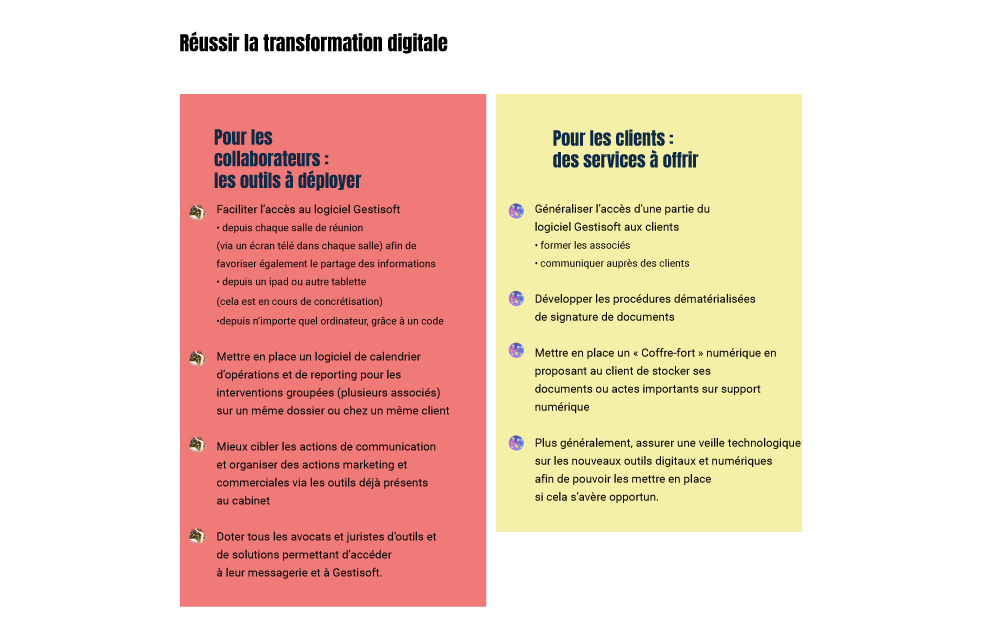

1. Etre référencé comme un acteur national
1.1 Accompagner chaque nouveau bureau
Alors que Cornet Vincent Ségurel s’est fortement développé ces dernières années, la mise en cohérence de l’ensemble des bureaux est indispensable pour maintenir l’identité du cabinet. A ce titre, la feuille de route recommande qu’un ou plusieurs associés soient désignés pour tout nouveau bureau, de manière à accompagner son décollage et son intégration au sein de Cornet Vincent Ségurel. L’objectif visé ? Que les associés s’acculturent au mieux, soient allégés des contraintes matérielles, travaillent en synergie avec d’autres et se sentent épaulés…
1.2. Maintenir le principe d’équipes multi-spécialistes sur chaque site
Particularité de l’organisation de Cornet Vincent Ségurel, des équipes multi-spécialistes sont constituées sur chaque site, de façon à ce que l’offre proposée par le cabinet soit partout la plus complète possible (selon le principe d’« autonomie technique » en vigueur au sein du cabinet). A ce sujet, la feuille de route rappelle que la manière dont se sont développés les premiers bureaux du cabinet fait figure d’exemple pour chaque nouvelle implantation.
1.3. Déployer des plans d’actions pour chaque implantation
- Devenir un acteur de plus en plus remarqué sur le territoire lillois
- Poursuivre l’intégration et la fusion des équipes autour des valeurs de la maison
- Structurer le Département Droit Social (avec au moins un associé), et en fonction des opportunités, créer un département Droit public
- Améliorer progressivement le positionnement de l’ensemble des associés pour augmenter leur visibilité, les synergies et accroitre le cross-selling
- Appliquer les procédures de saisie de temps du cabinet.
- Poursuivre le développement de la clientèle, y associer l’ensemble des associés et impliquer en partie les collaborateurs séniors ; cibler, coordonner, croiser les réseaux
- Améliorer progressivement le positionnement de l’ensemble des associés pour augmenter leur visibilité, les synergies et accroitre le cross-selling
- Renforcer la performance opérationnelle de l’activité (partage d’informations, transversalité inter départements, et inter-bureaux, et départementalisation)
- Renforcer l’expertise des associés et des collaborateurs (spécialisation, digital…)
- Renforcer la performance économique de l’activité
Devenir un acteur de plus en plus identifié dans le territoire parisien.
- Conforter la place de deuxième cabinet régional en conseil et contentieux tout en visant la première place
- Accroitre la notoriété de l’implantation
- Développer une compétence locale en NTIC/PI
- Renforcer l’attractivité à l’égard des collaborateurs à fort potentiel
- Développer le cross-selling
- Développer l’activité immobilière dans l’aspect conseil
- Renforcer notre présence dans le secteur des nouvelles technologies et de l’agroalimentaire
- Renforcer l’expertise des associés et des collaborateurs (spécialisation, digital)
- Améliorer la structuration et le fonctionnement de chacune des équipes
- Assurer la transmission de la clientèle du cabinet Portier Collet Verdier
- Définir une démarche de développement local commune
- Accroitre la performance économique
- Renforcer la performance opérationnelle de l’activité (partage d’information, transversalité inter départements, et inter-bureaux, et départementalisation).
- Renforcer la performance opérationnelle de l’activité (partage d’informations, départementalisation, transversalité inter départements, et inter bureaux)
- Poursuivre le développement de la clientèle, en y associant les plus jeunes associés ; cibler, coordonner, croiser les réseaux, structurer et systématiser, atteindre les directions régionales, les ETI et grands comptes
- Réfléchir à la structuration d’une équipe NTIC / PI
- Renforcer la performance économique de l’activité
- Poursuivre l’intégration d’associés managers d’équipe
- Renforcer l’expertise des associés et des collaborateurs (spécialisation, digital…)
- Poursuivre la gestion optimale de la succession des seniors partants.
- Réaliser l’intégration de l’équipe au sein du cabinet, autour des valeurs de la maison
- Développer la clientèle, coordonner et croiser les réseaux
- Structurer et développer progressivement la performance opérationnelle de l’activité (partage d’informations, départementalisation, transversalité inter-départements, et inter-bureaux)
- Préparer l’intégration de nouveaux associés dans les domaines d’activités complémentaires
Renforcer progressivement l’équipe de collaborateurs.
- Réaliser l’intégration de l’équipe au sein du cabinet, autour des valeurs communes
- Développer la clientèle, coordonner et croiser les réseaux
- Structurer et développer progressivement la performance opérationnelle de l’activité (partage d’informations, départementalisation, transversalité inter-départements, et inter-bureaux)
- Préparer l’intégration de nouveaux associés dans les domaines d’activités complémentaires, sur la période 2017-2019
- Renforcer progressivement l’équipe de collaborateurs.
2. Explorer de nouveaux relais de croissance
2.1 Renforcer l’activité internationale
Le développement international représentant une source de croissance non négligeable pour le cabinet, le comité de direction doit en faire une de ses priorités. Actuellement, Cornet Vincent Ségurel participe à trois réseaux internationaux
(Eurojuris International, Advoc, Globaladvocaten) qui contribuent de façon limitée au chiffre d’affaires du cabinet, au regard de l’investissement qu’ils représentent. De plus, les clients manquent parfois de lisibilité sur la capacité
du cabinet à les accompagner dans leurs opérations internationales. Suivant ce constat, la feuille de route recommande de :
- dresser la liste des régions avec lesquelles le cabinet pourrait intensifier ses relations au-delà de la participation à ces réseaux
- intensifier les relations bilatérales avec des cabinets amis à l’étranger
- établir un état des lieux précis de l’activité internationale du cabinet en mettant en place un processus de récupération d’information avec le service communication
- communiquer à l’égard de la clientèle régionale sur la capacité du cabinet à les accompagner à l’international
- répondre plus systématiquement aux enquêtes de référencement (Chambers, Legal 500)
- recruter des avocats français bi-nationaux
- étudier l’intérêt et les modalités de la création de desks Cornet Vincent Ségurel.
2.2. Etudier les opportunités de l’interprofessionnalité
Le développement de l’interprofessionnalité avec les professions réglementées peut-elle enrichir l’activité du cabinet ? Alors que la loi Macron ouvre de nouvelles possibilités dans ce domaine, le cabinet doit poursuivre cette réflexion.
La création de nouvelles charges au profit des jeunes notaires par la loi Macron pourrait par exemple être l’occasion d’identifier des membres de cette profession susceptibles de rejoindre le cabinet.
3. Adapter l’organisation du cabinet à sa mesure
Le cabinet ayant quasiment doublé de taille entre 2012 et 2016, la feuille de route invite à faire évoluer son organisation sans remettre en cause le rôle central de l’associé et les équilibres en vigueur à Cornet Vincent Ségurel.
3.1. Accentuer la transversalité entre départements
Disposer d’outils commun, tels des documents harmonisés, et renforcer les échanges sur le métier d’avocat : au vu de ces attentes, manifestées par les associés, le comité de direction pourrait encourager les départements du cabinet à :
- se réunir régulièrement
- échanger sur les sujets techniques, les évolutions réglementaires, les offres de services et les politiques de développement de la clientèle
- développer une activité de Recherche et développement afin d’anticiper les problématiques à fort potentiel.
3.2. Poursuive la professionnalisation des services supports
Raffermir significativement les fonctions supports de Cornet Vincent Ségurel en les professionnalisant et en optimisant leurs moyens contribuerait à faciliter les actions de communication et de marketing du cabinet, le développement commercial des associés ainsi que les interactions entre membres du cabinet ou avec les clients.
A cet effet, la feuille de route propose de renforcer tout particulièrement le service Communication et marketing ainsi que la fonction Technologie et systèmes d’information.
Direction Communication et Marketing
Le recrutement d’un directeur Communication, marketing et business développement pourrait permettre de mieux répondre aux besoins en communication interne comme externe du cabinet et, de ce fait, faciliter le déploiement d’une
politique proactive et structurée de développement des clients cibles. Ce directeur aurait pour mission d’assurer :
- une veille informative des marchés et clients-cibles
- la mise en valeur du contenu produit par les associés
- le développement d’offres « différenciantes » à destination des clients-cibles
- un accompagnement plus approfondi des associés dans leurs approches de leurs clients et dans leurs initiatives de business développement :
aide à la définition d’une stratégie / préparation de présentations à destination des clients / repérage de nouveaux marchés et clients cibles pour le cabinet / mise à jour de la liste des deals réalisés / incitation à la production de publications ou d’événements par les avocats
/ rédaction de réponses à des appels d’offres.
Direction Digital et technologies de l’information
Afin que l’actuel service informatique évolue vers une fonction Digital et technologies de l’information à même d’accompagner la transformation numérique du cabinet, la
feuille de route propose de recruter une ou plusieurs personnes sur cette activité d’ici à 2020. Ainsi reconfiguré, le service devrait outiller le cabinet en vue de faciliter les interactions avec les clients, le travail en équipe,
l’accompagnement des évolutions liées à l’e-billing ou aux demandes clients.
4. Réussir la transformation digitale
4.1. S’outiller pour l’interne et le client
Véritable « transformation », le renforcement de la dimension digitale du cabinet concernera l’ensemble des membres du cabinet. Sa réussite exige qu’elle s’accompagne, en interne, d’actions de communication et de formations.
4.2. Créer une offre Tech et Digital
La création d’une offre Tech et digital, offrant des services standardisés et à moindre coût, participera également à la transformation digitale du cabinet. Dans cette optique, la feuille de route propose :
- d’étudier la manière d’organiser cette offre le plus rapidement possible
- de mesurer les investissements nécessaires
- de prévoir une sensibilisation et des formations des avocats comme du personnel administratif de manière à faciliter leur adaptation à cette mutation de marché.
5. Conforter la solidité financière du cabinet
Si jusqu’ici le cabinet a disposé d’une structure financière solide, le comité de direction devra continuer à assurer une telle solidité, de manière à dégager des ressources permettant d’accompagner les projets de développement. Pour ce faire, outre l’application du plan d’actions dans son ensemble, la feuille de route recommande de :
- formaliser un plan de développement annuel propre à chaque équipe en identifiant et en priorisant les clients à fort potentiel pour chaque portefeuille
- améliorer le pricing
- utiliser le levier de la croissance externe pour accéder à de nouveaux clients et à de nouvelles compétences, en concertation avec les équipes
- mesurer les retours sur investissement du cabinet sans brider les initiatives
- mutualiser les investissements à travers des partenariats ou l’interprofessionnalité
- inviter les équipes à prospecter et à travailler ensemble
- compenser l’effritement des marges de certains dossiers par l’augmentation du chiffre d’affaires et l’amélioration de la productivité (notamment en renforçant l’offre Premium).
6. Investir dans des bureaux adaptés aux besoins comme aux nouveaux usages
Le cabinet a jusqu’ici cherché à investir dans des bureaux adaptés afin d’anticiper les besoins en locaux et de manière à disposer de surfaces facilement récupérables. La feuille de route rappelle l’intérêt de maintenir ces investissements facteurs de stabilité, et invite à anticiper une éventuelle modularité des locaux, en prenant en compte les hypothèses de standardisation de certains services, de filialisation d’activité, ou de l’accroissement de certains usages de travail (télétravail, travail collaboratif…). Quoi qu’il en soit, l’investissement doit porter sur des bureaux fonctionnels, et assurer des réserves foncières suffisantes, et ce sans grever les capacités financières du cabinet dans d’autres domaines.
Suivant ce cadre, la feuille de route se positionne en faveur d’une nouvelle implantation à Rennes et de l’extension des bureaux nantais et parisiens (si nécessaire lyonnais).